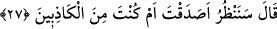
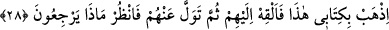

27. (Süleyman hüdhüde) dedi ki: “Doğru mu söyledin, yoksa yalancılardan mısın,
bakacağız.”
Bu cümle açıklama için başlangıç cümlesidir. Sanki “Hüdhüd sözünü bitirince
Süleyman (a.s.) ne yaptı?” diye sorulmuş ve şöyle cevap verilmiştir:
“(Süleyman hüdhüde) dedi ki:” Bize haber verdiğin, söylediği şeyler konusunda:
“Doğru mu söyledin, yoksa yalancılardan mısın, bakacağız.”
Burada “__WORD__ (bakmak)” düşünmek mânâsınadır. Yâni mutlaka araştırıp öğreneceğiz,
demektir. Kâşifî der ki: “Hemencecik bu hususa göz atalım ve teemmül edelim.”
demektir.
Bu âyet, haber-i vâhidin şöhret ve tevâtür derecesine ulaşmadıkça zorunlu bir
ilim/bilgi olmadığına, dolayısıyla onun hakkında tecvîz sınırında tevakkuf gerektiğine
delâlet eder. Haber-i vâhid, bir, iki ve daha fazla insanın verdiği haberdir. Yine bu
âyette haber-i vâhidin atılmayarak, doğru mu yalan mı olduğunun araştırılması
gerektiğini gösterir. Şâyet doğruluk emâreleri ortaya çıkarsa kabul edilir, aksi halde
kabul edilmez.
Bazıları demiştir ki: “Süleyman (a.s.) Belkıs’ın saltanatını, malını ve güzelliğini işitti,
ancak kendisine tesir etmedi. Buna tamahı da yoktu. “Onun ve kavminin, Allah’ı bırakıp
güneşe secde ettiklerini gördüm.” diyerek dinden bahsedince birden bire değişti ve
İslâm adına öfkelendi. Ona mektup yazıp İslâm dinine dâvet etmek istediğini, bunun için
kâğıt ve divit getirmelerini istedi.”
Bunun üzerine Süleyman (a.s.) o mecliste veya daha sonra Belkıs’a bir mektub yazdı
ve şöyle dedi: “Allah’ın kulu Dâvud oğlu Süleyman’dan Sebe’ melikesi Belkıs’a.
Rahmân ve Rahîm olan Allah’ın adıyla. Selâm, hidâyete tâbi olanlara olsun. Bundan
sonra, bana baş kaldırmayın, teslimiyet gösterip bana gelin.”
Sonra mektubu misk ile damgaladı, taşında Allah’ın ism-i a’zamı nakşedilmiş olan
yüzüğüyle mühürledi ve hüdhüde verdi. Hüdhüd, gagasıyla mektubu aldı veya mektubu
iple bağlayıp hüdhüdün boğazına astı ve şöyle dedi:
28. Şu mektubumu götür, onu kendilerine ver, sonra onlardan biraz çekil de, ne
sonuca varacaklarına bak.
“Şu mektubumu götür,” Süleyman (a.s.)’ın mektubu tasarruf ve işin aslını öğrenme
konusunda güçlü cinlerden hükümranlığı altındaki biriyle değil de özel olarak hüdhüdle